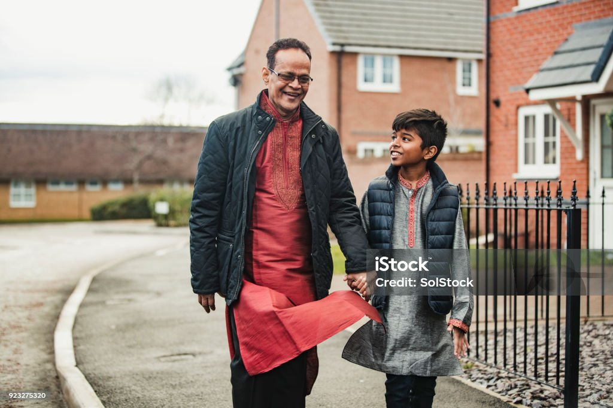
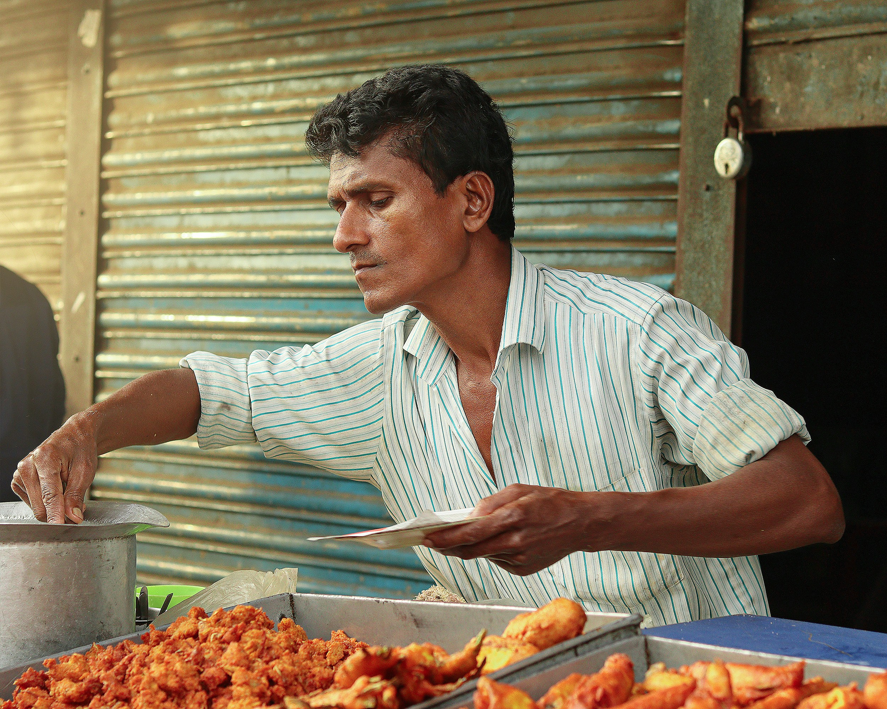

Drama and theatre is an old tradition that is very popular in Bangladesh. More than a dozen theater groups in Dhaka City have been regularly staging locally written plays for hundreds of years. Many have also started adopted some plays from European writers. Baily Road in Dhaka is known as “Natak Para” and this is one location where drama shows are regularly held. Many shows are also held at the Dhaka University.

Another important aspect of the culture of Bangladesh is clothing. Bangladeshi woman usually wear Saris, made of the world famous and expensive, finely embroidered quilted patchwork cloth produced by the village woman. Woman will traditionally wear their hair in a twisted bun, which is called the “Beni style”. Hindus will traditionally wear Dhuty for religious purposes. These days most men of Bangladesh wear shirts and pants.